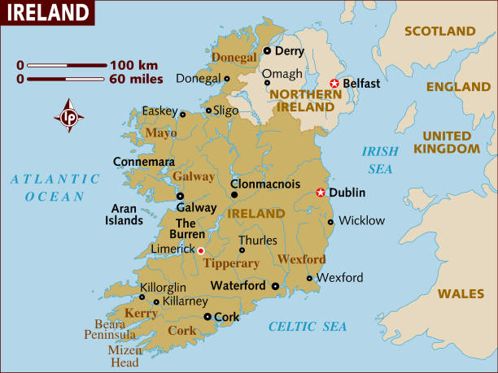

Locations of intrest
Situated on a coastal plain facing the Atlantic Ocean, Sligo is located on low gravel hills on the banks of the Garavogue River between Lough Gill and the estuary of the Garavogue river leading to Sligo Bay. The town is surrounded on three sides by an arc of mountains, with the Ox Mountain ridges of Slieve Daeane and Killery Mountain to the southeast bordering Lough Gill. The flat topped limestone plateaux of Cope's, Keelogyboy and Castlegal Mountains to the north and northeast and the singular hill of Knocknarea with its Neolithic cairn to the west and the distinctive high plateau of Benbulben to the north.Sligo is an important bridging point on the main north/south route between Ulster and Connacht. It is the county town of County Sligo and is in the Barony of Carbury (formerly the Gaelic tuath of Cairbre Drom Cliabh). Sligo is the diocesan seat of the Roman Catholic Diocese of Elphin. It is in the Church of Ireland Diocese of Kilmore, Elphin and Ardagh.County Sligo is one of the counties of the province of Connacht. It is part of the Border Region, a region of over 500,000 people which also comprises the counties of Cavan, Donegal, Leitrim, Louth and Monaghan.
Locations of Intrest
Strandhill
Strandhill is a vibrant seaside village and holiday resort located on the R292 – it is roughly 7 miles form Sligo town. With its wild Atlantic waves is also a very popular spot for surfers throughout the year. It is said that it is one of the best places in Europe to surf! Along the seafront, you will find Shells Cafe, Voya Seaweed Baths, Surf Clubs, The Strand Bar. Close by, you will find Strandhill Golf Course, Sligo Airport, Sligo Enterprise & Technology Centre, and more restaurants and pubs. Surf lessons are available throughout the year with the local surf shops, and when there is no surf, there is stand up paddling!Strandhill is a proud stop on the surf coast of the world’s longest defined coastal touring route – a sensational journey of soaring cliffs, hidden beaches and epic bays. Strandhill is only 7km from Sligo town, 2½ hours from Dublin by road, 3 hours travel from Belfast and 45 minutes from Knock airport, so what are you waiting for? Dive into the fascinating history of the Coolera peninsula, the battles of fearsome Queen Maeve, her grave on Knocknarea and find out where Saint Patrick lost a tooth…
Locations of Intrest
Rossespoint
Rosses Point has, in the past, provided inspiration for artists, poets and musicians which continues to this day. Our most famous connection is to the Yeats family. The extended family were very involved with Sligo’s shipping trade. The village provided a haven for their youth along with inspiration for the writings of WB and the paintings of Jack. Elsinore was owned by their Great Uncle William Middleton. The Middleton lodges, Bowmore and Moyle, were used by extended family. Moyle Lodge saw the return of WB as a young adult for the summer of 1887. His uncle George Pollexfen hosting WB whilst he penned the story poem The Wanderings of Oisin. It could be said that sufficient attention hasn’t been paid to the importance of the Yeatsian connection to the village, it may be very worthwhile to delve into WB’s writings for a glimpse of the village long ago, or to gaze at the way Jack captured the essence of the place in his paintings. Follow the coastal walk and find out more from the interpretive panels.
Locations of Intrest
Benbulben
Undoubtedly Ireland’s most distinctive mountain, Benbulben is sometimes referred to as Ireland’s own Table Mountain. The most distinctive peak among the Dartry range, it was formed during the ice age by massive glaciers segmenting the landscape.Gortarowey is all weather in nature consisting of a hard surfaced finish and is suitable for all ages and abilities. The trail begins in a secluded forest area before opening out to provide genuinely stunning close up views of Benbulben head. Later in the walk panoramic views of Donegal Bay are also available with the mountains of Donegal including Slieve League highly prominent in addition to Mullaghmore and Classiebawn Castle.Benbulben’s literary pedigree is arguably unrivalled in Ireland due to its links to W.B. Yeats, who is buried at Drumcliffe churchyard some 6km from the trail head of this walk. The steeper sides of Benbulben are formed from large amounts of Dartry limestone, with the smoother sides composed of shale. The unusual landscape houses an equally eclectic mix of flora and fauna, including Arctic alpine plants, wild hares, foxes and choughs.
Locations of Intrest
Town Centre
Sligo Irish: Sligeach, meaning 'abounding in shells') is a coastal seaport and the county town of County Sligo, Ireland, within the western province of Connacht. With a population of approximately 20,000 in 2016, it is the largest urban centre in the county, with Sligo Borough District constituting 61% (38,581) of the county's population of 63,000. Sligo is a historic, cultural, commercial, industrial, retail and service centre of regional importance in the West of Ireland, and is served by rail, port and road links. Sligo is also a tourist destination, being situated on the Wild Atlantic Way, with many literary and cultural associations. Sligo is the setting for a large number of the texts in the Mythological Cycles. The story of Diarmad and Grainne has its final act played out on Ben Bulben. The Second Battle of Moytirra is associated with Moytirra in South County Sligo. Other texts include Bruidean Ceise Corann, set on Keash Mountain. The rich array of megalithic monuments in the area has been an inspiration to artists and writers such as Samuel Fergusson. The poet and Nobel laureate William Butler Yeats (1865–1939) spent much of his childhood in northern Sligo and the county's landscapes (particularly the Isle of Innisfree, in Lough Gill) were the inspiration for much of his poetry. Yeats said, "the place that has really influenced my life most is Sligo." He is buried in North County Sligo, "Under Ben Bulben", in Drumcliff. William Yeats' brother Jack, a painter, also was inspired by the Sligo landscape.